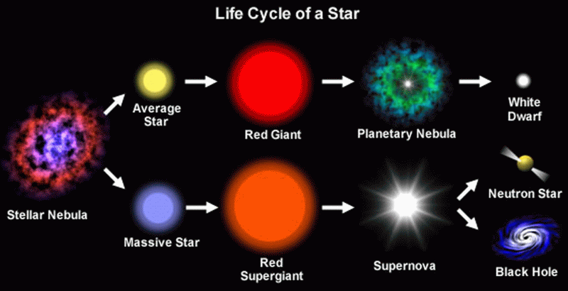
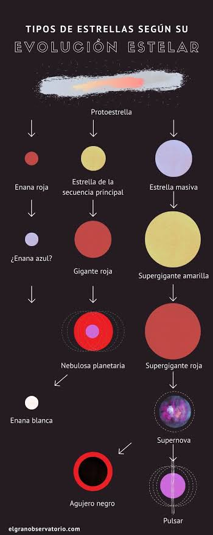
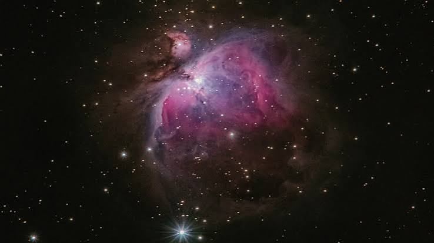

El ciclo de vida de una estrella abarca desde el colapso de una región densa en una nebulosa molecular hasta la formación de un remanente compacto, y constituye uno de los procesos fundamentales que dan forma a la estructura química y energética del universo. Aunque los tiempos involucrados son inaccesibles a la experiencia humana directa, la astrofísica ha podido reconstruir este ciclo a partir de la observación simultánea de estrellas en distintas etapas evolutivas, combinada con modelos teóricos de estructura y evolución estelar.
El proceso comienza en las nebulosas moleculares, regiones del medio interestelar donde el gas y el polvo alcanzan densidades suficientemente altas para que la autogravitación provoque un colapso local. A medida que el material cae hacia el centr o del núcleo en formación, la energía gravitacional se convierte en energía térmica, elevando progresivamente la temperatura y la presión hasta que el núcleo alcanza aproximadamente 10 millones de Kelvin, umbral en el que se inician las reacciones de fusión nuclear del hidrógeno. Desde ese momento, la protoestrella se convierte en una estrella de secuencia principal.
Durante la secuencia principal, la estrella mantiene un estado de equilibrio hidrostático en el que la presión de radiación y la presión térmica generadas por las reacciones nucleares equilibran exactamente la fuerza gravitacional que tiende a comprimir el material hacia el centro. Este equilibrio puede sostenerse durante periodos que van de millones a miles de millones de años dependiendo de la masa de la estrella, y mientras persiste, la luminosidad y la temperatura superficial se mantienen relativamente estables. Cuando el hidrógeno en el núcleo se agota, el equilibrio se rompe y la estrella inicia su transición hacia las etapas post-secuencia principal, cuya naturaleza depende directamente de la masa inicial.
Las estrellas de masa baja e intermedia, como el Sol, experimentan una expansión gradual de las capas externas al mismo tiempo que el núcleo se contrae y calienta, evolucionando hacia la rama de las gigantes rojas. En esta fase, la fusión del helio en carbono ocurre en el núcleo mientras el hidrógeno continúa fundiéndose en una capa circundante. Finalmente, las capas externas se expulsan formando una nebulosa planetaria, mientras el núcleo remanente se estabiliza como una enana blanca. Las estrellas masivas, en cambio, continúan fusionando elementos progresivamente más pesados hasta alcanzar el hierro, momento en que el colapso gravitacional del núcleo es inevitable y se produce una explosión de supernova.

La masa inicial de una estrella es el parámetro que determina de manera más decisiva toda su evolución posterior, incluyendo su luminosidad, su temperatura, la duración de cada fase evolutiva y la naturaleza del remanente que deja tras su muerte. Las diferencias entre estrellas de distintas masas no son meramente cuantitativas sino también cualitativas, ya que la variación en la presión y temperatura internas habilita distintos ciclos de reacciones nucleares y distintos mecanismos de transporte de energía.
Las estrellas de baja masa, con menos de aproximadamente dos masas solares, presentan temperaturas centrales relativamente moderadas que favorecen la cadena protón-protón como mecanismo principal de fusión del hidrógeno. Su tasa de consumo de combustible es baja en relación con su reserva total, lo que les confiere vidas en la secuencia principal del orden de decenas de miles de millones de años. Al agotar el hidrógeno disponible evolucionan hacia gigantes rojas de baja luminosidad y terminan su vida como enanas blancas de helio o carbono-oxígeno, sin que se produzcan explosiones o eventos violentos de gran energía.
Las estrellas de masa intermedia, entre dos y ocho masas solares aproximadamente, presentan temperaturas centrales suficientes para que el ciclo CNO, en el que el carbono, el nitrógeno y el oxígeno actúan como catalizadores de la fusión del hidrógeno, sea el mecanismo dominante. Su núcleo convectivo genera una distribución más homogénea del combustible, y al evolucionar fuera de la secuencia principal alcanzan luminosidades considerablemente mayores en la rama de las gigantes y supergigantes. Su muert e produce enanas blancas de mayor masa, en algunos casos cercanas al límite de Chandrasekhar de 1.4 masas solares.
Las estrellas masivas, con más de ocho masas solares, poseen núcleos suficientemente calientes y densos para fusionar de manera sucesiva hidrógeno, helio, carbono, neón, oxígeno y silicio, acumulando capas concéntricas de elementos cada vez más pesados hasta que el núcleo queda compuesto por hierro y níquel. Dado que la fusión del hierro no libera energía neta sino que la absorbe, la presión térmica colapsa en fracción de segundo y el núcleo implosiona hasta densidades del orden de las de la materia nuclear. La onda de choque resultante expulsa las capas externas en una explosión de supernova de tipo II, dejando como remanente una estrella de neutrones o, si la masa del núcleo supera las tres masas solares, un agujero negro estelar.

El tiempo de vida de una estrella en la secuencia principal está determinado por la relación entre la masa de hidrógeno disponible como combustible y la tasa a la que dicho combustible se consume mediante fusión nuclear. Esta relación produce una dependencia inversa entre masa y longevidad que resulta contraintuitiva a primera vista: las estrellas más masivas, con mayor reserva absoluta de hidrógeno, consumen su combustible a una tasa tan acelerada que su vida es órdenes de magnitud más corta que la de las estrellas de baja masa.
Las estrellas con masas superiores a 50 masas solares permanecen en la secuencia principal durante apenas 3 a 5 millones de años, tiempo durante el cual generan luminosidades del orden de un millón de veces la solar. En el extremo opuesto, las enanas rojas de masa inferior a 0.3 masas solares tienen vidas teóricas que superan el billón de años, muy por encima de los 13,800 millones de años que tiene el universo observable, lo que implica que ninguna enana roja ha llegado aún al final de su vida desde la formación de las primeras estrellas. Las estrellas de masa solar tienen una vida total en la secuencia principal de aproximadamente 10,000 millones de años, de los cuales el Sol ha consumido cerca de la mitad.
El tiempo de vida tiene también consecuencias directas sobre la contribución química de cada estrella al medio interestelar. Las estrellas masivas de vida corta sintetizan y dispersan mediante supernovas grandes cantidades de elementos del grupo del oxígeno y del hierro en periodos de tiempo relativamente breves, enriqueciendo rápidamente el gas interestelar de las galaxias jóvenes. Las estrellas de vida larga, por su parte, contribuyen de manera más gradual y sostenida, liberando elementos más ligeros a través de vientos estelares y nebulosas planetarias a lo largo de periodos que abarcan múltiples generaciones galácticas. La combinación de ambos tipos de contribución explica la distribución observada de elementos en la Vía Láctea y en otras galaxias.
